1.Introduction
This manual is a reference designed to familiarize you with the BNC 588 series pulse generator and is arranged so that you can easily find the information you are looking for. Generally, each topic has its own section and no section assumes that you have read anything else in the manual.
Technical Support
For questions or comments about operating the 588 our technical staff can be reached via one of the following methods:
- Phone – (415) 453-9955
- Fax – (415) 453-9956
- Internet – www.berkeleynucleonics.com
Warranty
Warranty is 1 Year standard, unless otherwise specified. Materials and workmanship, return to manufacturer included. BNC will repair or replace any defective unit. Contact us for information on obtaining warranty service.
Package Contents
The box you receive should contain the following:
- 588 Pulse Generator
- AC Power Cord*
- User's Manual on Disk
Contact BNC (415) 453-9955 if any parts are missing.
2.Safety Issues
Normal use of test equipment presents a certain amount of danger due to electrical shock because it may be necessary for testing to be performed where voltage is exposed.
An electrical shock causing 10 milliamps of current to pass through the heart will stop most human heartbeats. Voltage as low as 35 VDC or 35 VRMS AC should be considered dangerous and hazardous, as it can produce a lethal current under certain conditions. Higher voltages pose an even greater threat because such voltage can easily produce a lethal current. Your normal work habits should include all accepted practices that will prevent contact with exposed high voltage and steer current away from your heart in case of accidental contact with a high voltage. You will significantly reduce the risk factor if you know and observe the following safety precautions:
- If possible, familiarize yourself with the equipment being tested and the location of its high-voltage points. However, remember that high voltage may appear at unexpected points in defective equipment.
- Do not expose high voltage needlessly. Remove housing and covers only when necessary. Turn off equipment while making test connections in high-voltage circuits. Discharge high-voltage capacitors after shutting down power.
- When testing AC powered equipment, remember that AC line voltage is usually present on power input circuits, such as the on-off switch, fuses, power transformer, etc.
- Use an insulated floor material or a large, insulated floor mat to stand on, and an insulated work surface on which to place equipment. Make certain such surfaces are not damp or wet.
- Use the time-proven "one hand in the pocket" technique while handling an instrument probe. Be particularly careful to avoid contact with metal objects that could provide a good ground return path.
- Never work alone. Someone should always be nearby to render aid if necessary. Training in CPR first aid is highly recommended.
3.Front Panel Overview
588 Front Panel
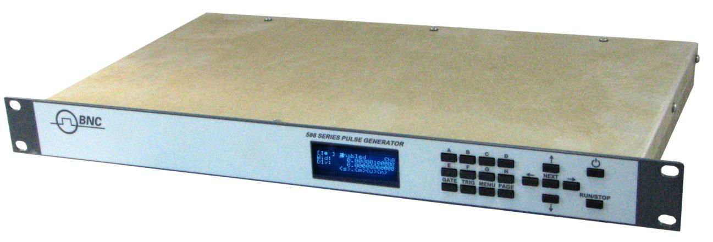
Display Layout and Indicators
A 4 line x 20 character vacuum fluorescent display module displays parameters and status information. The status information is located in the upper-left corner of the display, between the two brackets. There are four enunciators:
| Enunciator | Meaning |
|---|---|
| Vertical Arrow | Indicates there are additional pages to the current menu. |
| Blinking Light | Indicates the unit is actively generating pulses, or armed and waiting for an external trigger. |
| Question Mark | In external PLL oscillator operation mode, this indicates the internal PLL is not yet locked with the external clock source. |
| "p" | A "p" will appear when the system clock is in external PLL mode and has locked on to the source signal. |
| "e" | An "e" will appear when the system clock is in external mode, but not when in external with PLL. |
The upper-right side of the display contains the title of the currently displayed menu. The rest of the display is used for system parameters. The display brightness may be adjusted, allowing the instrument to be used under various lighting conditions.
Description of Front-Panel Area
Keypads
Two keypad areas provide fast access to various menus and easy editing of system parameters.
| Keypad | Function |
|---|---|
| Menu Keypad | Provides one touch access to the channel, trigger, gate, and system menus for setting up the appropriate parameters. The Page button will allow you to page through the multiple levels of a menu, if multiple levels exist. |
| Arrow Keypad | The up/down arrows are used to increment/decrement the current cursor parameter (indicated by the blinking cursor). The position of the cursor controls the step size for each increment. The right/left arrows move the cursor to different positions within the current parameter. The NEXT key selects the next parameter in the currently displayed menu. |
4.Pulse Concepts and Pulse Generator Operations
Counter Architecture Overview
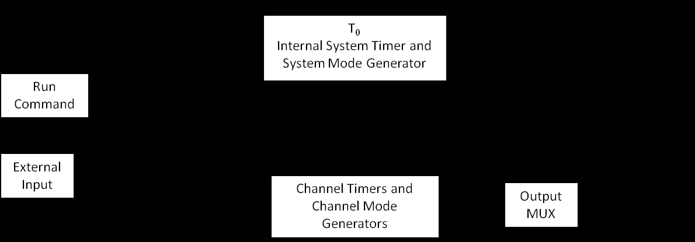
System Timer Functions
The System Timer functions as a non-retriggerable, multi-vibrator pulse generator. This means that once started, depending on the mode, the timer will produce pulses continuously. Before pulses can be generated, the timer must be armed and then receive a start pulse. Arming the counter is done by pressing the Run/Stop key. With external trigger disabled, the Run/Stop key also generates the start command for the counter. With external trigger enabled, the external trigger provides the start pulse. In either case, once started, the counter operation is determined by the System Mode Generator. Standard modes include:
| Mode | Behavior |
|---|---|
| Continuous | Once started T0 pulses are generated continuously. |
| Single Shot | One T0 pulse is generated for each start command. |
| Burst | "N" T0 pulses are generated for each start command. |
| Duty Cycle | Once started T0 pulses cycle on and off continuously. |
The T0 pulse is distributed to all of the start inputs of the Channel Timers and Mode Generators.
Channel Timer Functions
The Channel Timer functions as a non-retriggerable, delayed, one shot pulse generator. This means that the timer will only generate one delayed pulse for every start pulse received. Once the channel timer has started counting, additional start pulses will be ignored until the pulse has been completed (non-retriggerable). The start pulse for each channel is provided by the internal T0 pulse generated by the internal system timer. Whether or not a pulse is generated for each T0 pulse is determined by the Channel Mode Generator. Standard modes include:
| Mode | Behavior |
|---|---|
| Normal | A pulse is generated for each T0 pulse. |
| Single Shot | One pulse is generated for the first T0 pulse, after which the output is inhibited. |
| Burst | "N" number of pulses are generated for the first T0 pulse, after which the output is inhibited. |
| Duty Cycle | "N" number of pulses are generated for each T0 pulse after which the output is inhibited for "M" number of pulses. The cycle is then repeated for each subsequent T0 pulse. |
Different modes may be selected for each output, allowing a wide variety of output combinations. Each output may also be independently disabled or gated (using the external gate input).
Digital Output Multiplexer
The outputs of each of the Channel Timers is routed to a set of multiplexers. This allows routing of any or all Channel Timers to any or all of the units' outputs. In the normal mode of operation, the output of the nth Channel Timer is routed to the nth output connector. As an example, if a double pulse is required on Channel A, one can multiplex the Channel A timer with the Channel B timer, then adjust each timer to provide the necessary pulses.
Dependent & Independent Timing Events
The 588 allows the user to control the relationship between the Channel Timers by setting the sync source for each timer. Independent events are all timed relative to the internal T0 start pulse. Dependent events may be linked together by setting the sync source to the controlling event. This allows the instrument to match the timed events and adjustments can be made in one event without detuning the timing between it and the dependent event.
Navigating the 588 Front Panel
Selecting Menus
Parameters are grouped in menus, selectable by using the function keys. To select the output channel parameters press the letter key corresponding to the desired channel. Menus may include a number of different pages, each page containing up to four parameters. The status block in the upper-left corner of the display shows a vertical arrow if the current menu contains additional pages. Press the Page button to select the next page. There may be multiple channel menus depending on the model. Secondary or advanced menus can be accessed by pressing the letter key of that channel a second time.
There are also individual menu keys for the gate (GATE), trigger (TRIG), and system (MENU) menus. Depending on the model, each of these menus may have multiple pages, accessed by pressing the Page button, or secondary menus, accessed by pressing that particular function key a second time.
Selecting Menu Items
Within a menu, the blinking cursor indicates the current menu item for editing. The NEXT key will select a different menu item.
Numeric Input Mode
When the current item is numeric, the system enters the Numeric Input Mode. In this mode data may be edited using the arrow keypad. The Left and Right arrow keys are used to select a digit to edit. The selected digit blinks to identify itself as the active digit. The Up and Down arrow keys are then used to increment or decrement this digit.
Entering Non-Numeric Parameters
When the current item is non-numeric, the Up and Down arrow keys are used to select among different options for the parameter. If the item is an on-off toggle, the Up arrow enables the item and the Down arrow disables the item.
Enabling System Output
The Run/Stop key is used to arm the system. With external trigger disabled, the key will arm and start pulse output. With external trigger enabled, the key will arm the pulse generator. Pulse output then starts after the first valid trigger input. Pressing the Run/Stop key a second time disables the pulse generator.
Enable/Disable Channel Output
At the top of each channel menu page is a parameter to enable or disable the output of the channel. Each channel may be individually enabled or disabled.
Rearming the Channel Timers
If there are channels currently running in normal mode, single shot and burst mode channels can be re-armed without affecting the timing on normal mode channels. The rearming page is located under the System Menu. Once on the rearming page, pressing the up arrow will rearm the channel timers.
Setting Pulse Timing Parameters
Pulses are defined by a delay, from their sync or start pulse to the active edge, and a width.
| Parameter | Description |
|---|---|
| Wid: | Sets the width of the active portion of the pulse. |
| Dly: | Sets the delay from the sync source to the rising edge of the pulse. |
Setting Pulse Output Parameters
There are two basic types of outputs available on the 588:
- TTL/CMOS compatible outputs.
- Adjustable amplitude outputs.
| Parameter | Description |
|---|---|
| Out: | Selects between TTL/CMOS mode and Adjustable mode when both are available on a single output. |
| Pol: | Sets the voltage polarity of the pulse, active high or active low. |
| Ampl: | In Adjustable mode the unloaded output voltage is set. The actual output voltage will depend on the load impedance. For example: if the load is 50 Ω the output will be 50% of the stated voltage. |
Using the Output Multiplexer
Each output channel includes a multiplexer which allows routing of any or all of the timer outputs to the physical output. This allows double pulses and other complex pulse trains to be generated.
-HGFEDCBA-
MUX: -00000101-
The multiplexer is represented by an "n" bit binary number as shown above. "n" is the number of channels. Each bit represents a channel timer, which is enabled by setting the bit to one. In the above example, timers A and C are combined on the current output.
Setting System Internal Rate Parameters
The internal T0 period controls the fundamental output frequency of the system. Each channel may be operated at submultiples of the fundamental frequency by using the channel duty cycle mode.
| Parameter | Description |
|---|---|
| Source: | Sets the reference source for the internal T0 period. |
| Per: | Sets the internal T0 period. |
To set the system Internal Rate press the Menu key, then use the arrow keys to specify the T0 period.
5.588 Menus
588 Main Menu Structure
The following menus can be accessed by pressing the menu button. The first menu will be the System Mode Menu. By pressing the menu button again the Clock/Rate Menu will come up. As the menu button is pressed again the next menus will be entered in the order seen below. Once the last menu is reached pressing the menu button will start the menus over at the System Mode Menu. All of the values in the fields below are the defaults; this is what the menus will look like when the system is first powered up, or if a recall 0 command is entered.
System Mode Menu
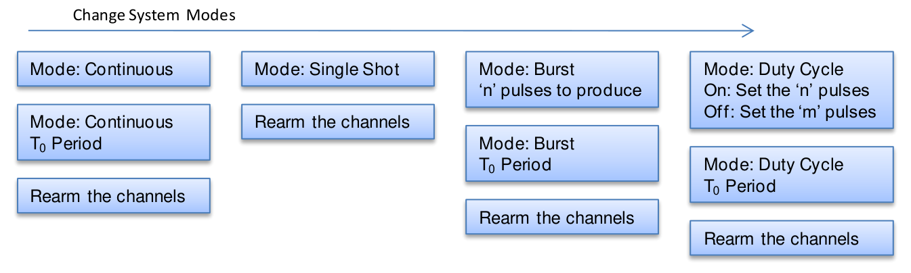
- Continuous: Mode: Continuous. (Press the Page button to change system modes / rearm the channels.)
- Single Shot: Mode: Single Shot. Rearm the channels.
- Burst: Mode: Burst; "n" pulses to produce; T0 Period. Rearm the channels.
- Duty Cycle: Mode: Duty Cycle; On: set the "n" pulses; Off: set the "m" pulses; T0 Period. Rearm the channels.
Clock/Rate Menu
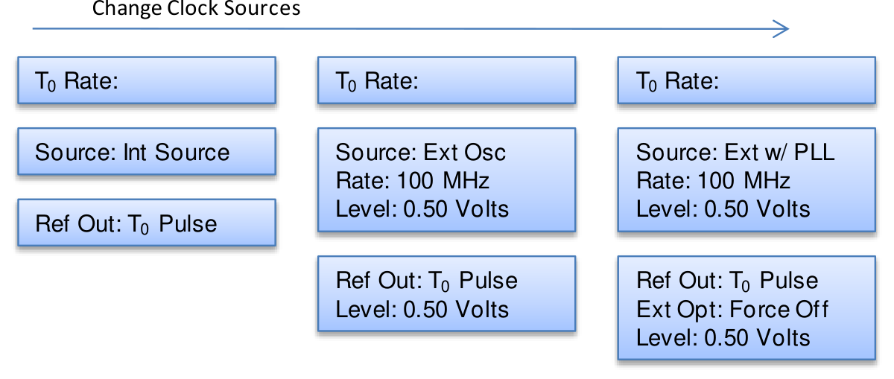
- Int Source: Source: Int Source; T0 Rate; Ref Out: T0 Pulse; Level: 0.50 Volts.
- Ext Osc: Source: Ext Osc; Rate: 100 MHz; Level: 0.50 Volts; Ref Out: T0 Pulse; T0 Rate.
- Ext w/ PLL: Source: Ext w/ PLL; Rate: 100 MHz; Level: 0.50 Volts; Ref Out: T0 Pulse; Ext Opt: Force Off; T0 Rate.
(Press the Page button to change clock sources.)
Counter Menu
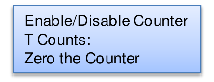
- Enable/Disable Counter
- T Counts:
- Zero the Counter
System Configuration Menu
| Interface: RS-232 | Interface: USB | Interface: Ethernet |
|---|---|---|
| Baud Rate: 115200 | Auto: Enabled | Auto: Enabled |
| Echo: Disabled | Mark: . | Mark: . |
| Auto: Enabled | LCD: 4 | LCD: 4 |
| Mark: . | Key Rate: 50 ms | Key Rate: 50 ms |
| LCD: 4 | Key Volume: 10 | Key Volume: 10 |
| Key Rate: 50 ms | ||
| Key Volume: 10 |
(Press the Page button to change system serial interface modes.)
Store Menu
- Store#: Choose the location to store the current settings.
- Name: The name associated with the current location.
- The action needed to Store the information.
Recall Menu
- Recall#: Choose the location to restore the settings from.
- Name: The name associated with the current location.
- The action needed to Recall the information.
Auxiliary Menu
Screen to let the user know that there may be updates on the BNC website for their unit.
System Information Menu
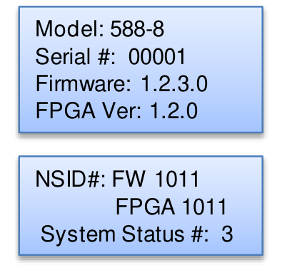
- Model: 588-8
- Serial #: 00001
- Firmware: 1.2.3.0
- FPGA Ver: 1.2.0
- NSID#: FW 1011, FPGA 1011
- System Status #: 3
(Press the Page button.)
588 Channel Menu Structure
The following menus can be accessed by pressing the button marked for the desired channel. The first menu will be the Channel Menu. By pressing the button marked for the desired channel again the channels' advanced menu will be entered. As the channel button is pressed again the original channel menu will be revisited.
Channel Menu
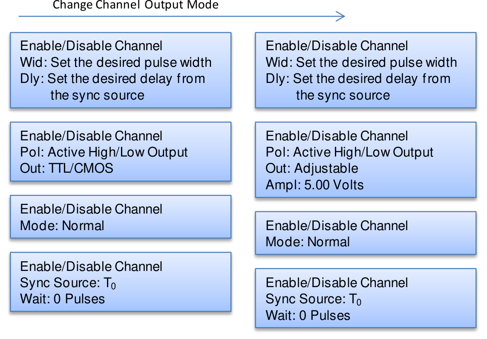
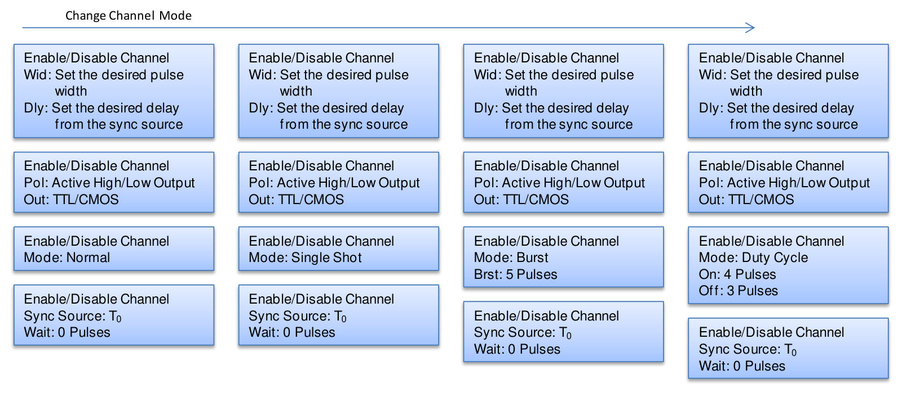
Each page begins with an Enable/Disable Channel parameter. The pages cycle through the timing and output configuration for the selected channel mode:
- Timing page: Wid: set the desired pulse width; Dly: set the desired delay from the sync source.
- Output page (TTL/CMOS): Pol: Active High/Low Output; Out: TTL/CMOS.
- Output page (Adjustable): Pol: Active High/Low Output; Out: Adjustable; Ampl: 5.00 Volts.
- Mode page (Normal): Mode: Normal.
- Mode page (Single Shot): Mode: Single Shot.
- Mode page (Burst): Mode: Burst; Brst: 5 Pulses.
- Mode page (Duty Cycle): Mode: Duty Cycle; On: 4 Pulses; Off: 3 Pulses.
- Sync page: Sync Source: T0; Wait: 0 Pulses.
(Press the Page button to change channel output mode / channel mode.)
Channel Advanced Menu
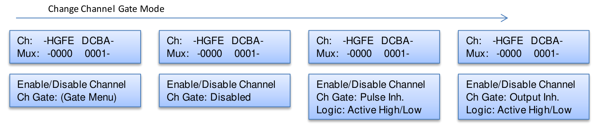
- Ch: -HGFE DCBA-; Mux: -0000 0001-
- Ch Gate: Disabled
- Ch Gate: Pulse Inh.; Logic: Active High/Low
- Ch Gate: Output Inh.; Logic: Active High/Low
- Ch Gate: (Gate Menu)
(Press the Page button to change channel gate mode.)
Trigger Menu
By pressing the Trigger button the trigger menu will be entered.
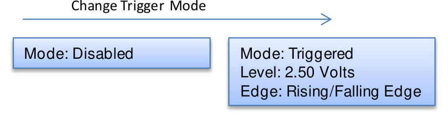
- Mode: Disabled
- Mode: Triggered; Level: 2.50 Volts; Edge: Rising/Falling Edge.
(Change trigger mode.)
Gate Menu
By pressing the Gate button the gate menu will be entered.
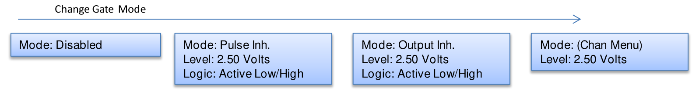
- Mode: Disabled
- Mode: Pulse Inh.; Level: 2.50 Volts; Logic: Active Low/High.
- Mode: Output Inh.; Level: 2.50 Volts; Logic: Active Low/High.
- Mode: (Chan Menu); Level: 2.50 Volts.
(Change gate mode.)
Setting System Mode of Operation
By pressing the Menu button the system mode menu can be accessed. The system Mode menu sets the T0 system timer mode. The mode may be changed by setting the cursor on the mode row and pressing the up and down key. By pressing the next button while in this menu will allow the user to change between setting the mode or the parameter. The menu will show the extra set of parameters (Brst, On & Off) only when they are applicable.
| T0 Mode | Parameters | Description |
|---|---|---|
| Continuous | N/A | |
| Single Shot | N/A | |
| Burst | Brst: | "N" number of pulses to generate for each T0 pulse. |
| Duty Cycle | On/Off: | "N" number of pulses to generate for each T0 pulse / "M" number of pulses to inhibit for each T0 pulse. |
Clock/Rate Menu
Setting the Clock Source and Rate
The System Clock Parameters can be accessed and changed by entering the Clock/Rate Menu by pressing the Menu button until that screen is entered. The 588 has the ability to be synced to either the internal clock T0 or from an external clock source. When the system is in internal mode the frequency is set by changing the T0 rate. When the system is in external mode the source can either be with or without PLL, and in either case the input level and frequency must be set.
| Parameter | Description |
|---|---|
| Source: | Selects between the internal or external clock source from which the unit will operate. |
| Rate: | Sets the T0 period which determines the fundamental output frequency of the unit. |
| Level: | When in external mode the level sets the triggering threshold for the input clock source. |
Setting the Output Reference
| Parameter | Description |
|---|---|
| Ref Out: | Selects the source and frequency of the output reference for synchronizing with the external system components. |
System Configuration Menu
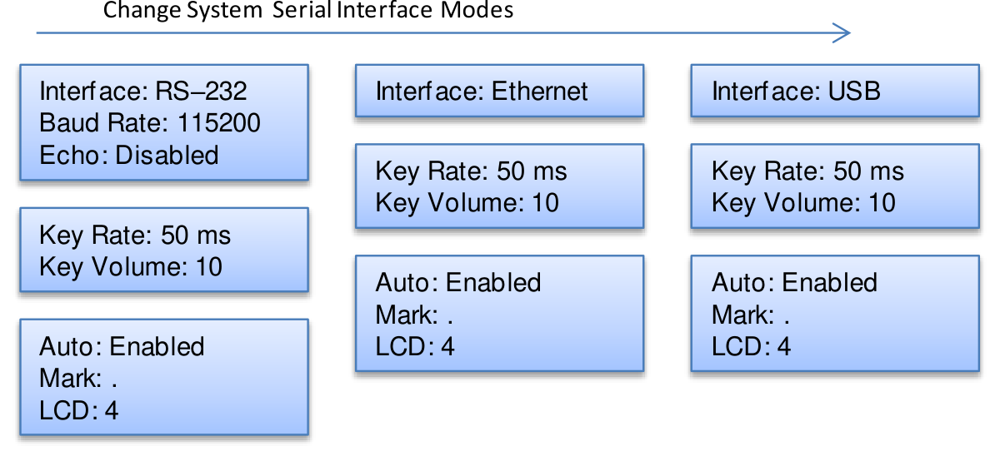
Setting System Communication Parameters
The System Communications Parameters can be accessed and changed by entering the System Configurations Menu by pressing the Menu button until that screen is entered. The 588 comes with a standard Ethernet, USB, and RS-232 serial ports. The unit will not respond to computer commands unless these ports are properly configured. The default Baud Rates for these interfaces are:
| Interface | Default Baud Rate |
|---|---|
| RS-232 | 115200 |
| USB | 38400 |
| Ethernet | 115200 |
The RS-232 and USB interfaces are Plug-n-Play capable, but the Ethernet requires third party software to be utilized (see Appendix D). When in the System Configuration menu only the RS-232 baud rate can be changed, the USB rate must be varied using the SCPI commands via one of the serial interfaces.
| Parameter | Description |
|---|---|
| Interface: | RS-232, Ethernet, or USB. |
| Baud Rate: | Selects the baud rate for the RS-232 serial interface. |
| Echo: | Selects whether the unit will echo characters back to the host computer or not. |
Setting Keypad Parameters
The keypad parameters can be set by entering the system configuration menu, and pressing the Page button. The rate at which a key will repeat itself when held down may be set. This can be used to provide a controlled rate at which a parameter is incremented. In addition, the volume of the beep can be controlled for the keypad.
| Parameter | Description |
|---|---|
| Key Rate: | Sets the rate at which the keys will repeat when held down. |
| Key Vol: | Sets the beep volume for the keypad. |
Setting the Auto Start Mode
The auto start feature can be set by entering the system configuration menu, and pressing the Page button twice. The unit may be configured to automatically start generating pulses after power up.
Setting the Display Decimal Mark
The display mark feature can be changed by entering the system configuration menu, and pressing the Page button twice. The unit may be configured to show either a "." or a "," when the parameters need separation like in the width menus.
| Parameter | Description |
|---|---|
| Mark: | Selects the format of the decimal mark to either a "." or a ",". |
Setting the Display Brightness
The display brightness feature can be changed by entering the system configuration menu, and pressing the Page button twice. The unit may be configured to illuminate the display to varying brightness. Also with a command that can be found in the SCPI command section the display can be turned off entirely.
| Parameter | Description |
|---|---|
| LCD: | Adjusts the display brightness. |
Store Menu
Storing a System Configuration
The store menu can be accessed by pressing the menu button until that screen is entered. Use the following procedure to store a complete system configuration:
- Set all parameters to the desired value.
- Select a configuration number and/or a configuration name.
- Label the configuration as desired.
- From the Store Menu, press the store button (PAGE) or from one of the serial interfaces type the save command.
Recall Menu
Recalling System Configurations
The recall menu can be accessed by pressing the menu button until that screen is entered. Use the following procedure to recall a stored or default system configuration:
- Enter the Recall Menu.
- Select a configuration number.
- From the Recall Menu, press the recall button (PAGE) or from one of the serial interfaces type the recall command.
Counter Menu
Using the Counter Function
The counter menu can be found by pressing the menu button until "Cntr" screen is entered. The Counter function counts the number of T0 pulses output by the system clock. When the system is in single shot, Burst, or Duty Cycle mode, the T0 count reflects the number of pulses output by the unit.
System Information Menu
Using the System Information Menu
The information menu can be found by pressing the menu button until the information screen is found. The Information Menu provides all of the pertinent version numbers and serial numbers for the unit. This information should be readily available when contacting customer service for troubleshooting help.
Setting Channel Mode of Operation
Enabling Channel Output
The channel menu can be found by pressing the desired channel button. At the top of each of the channel menu pages is a parameter to enable or disable the channel. Each channel may be individually controlled.
Setting the Channel Timing Parameters
To define a pulse requires two parameters: the delay to the active edge and the width of the pulse.
| Parameter | Description |
|---|---|
| Wid: | Sets the channel pulse width. |
| Dly: | Sets the channel delay until the active edge. |
Setting Pulse Output Configuration
The channel output configuration parameters can be changed by entering the channel menu and pressing the page button to find the output screen. The 588 supports two types of outputs: a high speed TTL/CMOS compatible output, and for applications which require different voltage levels or higher current, an adjustable voltage output. The pulses can also be defined to be active high or active low.
| Parameter | Description |
|---|---|
| Pol: | Sets the pulse polarity, active high or active low. |
| Out: | Selects the output mode, TTL/CMOS or Adjustable. |
| Ampl: | Sets the output voltage when the channel is in Adjustable mode. |
Setting Channel of Operation
To change the channel output modes enter the channel menu and press the page button until the output mode screen is entered. Each channel may be set independently to operate in one of four modes: normal, burst, single shot or duty cycle.
| Parameter | Description |
|---|---|
| Mode: | Selects the mode for the current channel. Additional parameters are provided for the burst and duty cycle modes. |
| Brst: | Sets the number of pulses in the burst mode to generate before inhibiting output. |
| On: | Sets the number of pulses to generate before inhibiting the output in Duty Cycle Mode. |
| Off: | Sets the number of pulses to inhibit before repeating the on cycle in Duty Cycle Mode. |
Delaying the Start of Channel Output
To change the optional wait parameter, enter the channel menu and press the page button until the source screen is entered. Within any channel mode, the output of the channel can be delayed using the wait parameter (within the Channel menu):
| Parameter | Description |
|---|---|
| Wait: | Sets the number of T0 pulses to wait until enabling the channel output. |
Setting the Sync Source
To change the sync source, enter the channel menu and press the page button until the source screen is entered. Although each channel receives its start pulse from the internal T0 pulse, logically the start pulse can be assigned such that the delay entered is relative to the T0 pulse or any other channel pulse. This allows dependent events to link. The unit will not allow a circular chain of sync sources that would result in a channel triggering itself. The delay entered is relative to the selected sync source.
| Parameter | Description |
|---|---|
| Sync Source: | Selects the channel sync source. |
Channel Advanced Menu
The Channel Advanced Menu can be entered by pressing the desired channel button twice.
Configuring the Channel Multiplexer
To define which outputs are fed into the channel multiplexer, the corresponding bit for the desired channel to add should be set to 1. All desired omitted channels should have the corresponding bit set to 0.
| Parameter | Description |
|---|---|
| MUX: | Enable/Disable the bit field. |
Setting Channel Gate Control
The channel gate menu can be entered by pressing the page button when in the channel advanced menu. When the global gate is set to Chan Menu, the channel can then use the gate input with independent behavior from other channels.
| Parameter | Description |
|---|---|
| Gate: | Enables the Gate input for the channel by setting the method of output control used with the gating function. |
| Logic: | Sets the logic level used with the gating function, either active high or active low. |
"Pulse Inhibit" method – the gate prevents the channel from being triggered by the channel's trigger source pulse. If a pulse has already started when the gate disables the channel, the pulse will continue normal output but will not restart on the next trigger pulse.
"Output Inhibit" method – the gate leaves the base triggering alone and enables/disables the output directly. If a pulse has already started when the gate disables the output, the pulse will be cut off.
Trigger Menu
Enabling System Trigger
The trigger menu can be entered by pressing the Trig button. Enable the use of the Trigger input by the system timer as a trigger source.
| Parameter | Description |
|---|---|
| Mode: | Selects between disabling/enabling the trigger mode(s). |
| Level: | Sets the trigger threshold. |
| Edge: | Selects between rising edge or falling edge as the trigger source when the trigger mode is enabled. |
Gate Menu
Enabling System Gates
The gate menu can be entered by pressing the Gate button. To enable the use of the gate input trigger inhibit or output control for all channels simultaneously, or on a per channel basis, set the following parameters in the gate menu:
| Parameter | Description |
|---|---|
| Mode: | Selects between disabling the Gate inputs and method of output control. |
| Level: | Sets the gating threshold. |
| Logic: | Sets the active logic level. |
6.Operating the 588
Quick Start – Normal Internal Rate Generator Operation
The 588 has a powerful set of functions providing a number of modes of operation for the internal or "System" rate generator (T0). Most of these functions can be ignored if a simple continuous stream of pulses is required. Starting from the default settings, which can be restored by recalling configuration 0, the following parameters need to be set:
| Step | Action |
|---|---|
| Pulse Width and Delay | Enter the Channel menus by pressing the letter key. Enter the required pulse width and delay. Repeat for each output channel. |
| T0 Period | Enter the Rate menu by pressing the menu button. Set the desired pulse period. |
| Start | Press the Run/Stop key to start generating pulses. |
| Stop | Press the Run/Stop key a second time to stop generating pulses. |
Quick Start – Normal External Trigger Operation
To generate a single pulse for every external trigger event, based on the default configuration 0, the following parameters need to be set:
| Step | Action |
|---|---|
| System Mode | Enter the System Mode menu by pressing the Menu button until the System Mode menu is selected. Select Single Shot mode. |
| Trigger Menu | Enter the Trigger Menu by pressing the Trig button. Select Triggered. |
| Level | Press the Next key until the Level parameter is highlighted. Set the trigger threshold voltage to approximately 50% of the trigger signal amplitude. |
| Edge | Press the Next key until the Edge parameter is highlighted. Set the unit to trigger off the rising or falling edge as desired. |
| Pulse Width and Delay | Enter the Channel menus by pressing the letter key. Enter the required pulse width and delay. Repeat for each output channel. |
| Start | Press the Run/Stop key to start generating pulses. |
| Stop | Press the Run/Stop key a second time to stop generating pulses. |
System Timer Overview
For internal operation, the 588 contains a timer and mode generator which generates an internal T0 clock that is used to trigger all the channel timers. System modes are controlled via the Mode menu.
Using Continuous Mode
The Run/Stop button starts and stops a continuous pulse stream at the rate specified by the Rate menu. This corresponds to the normal output mode for most pulse generators. To generate a continuous stream of pulses:
- Within the System Mode menu select Continuous mode.
- Within the Rate menu: select the system oscillator or external clock in frequency; set the desired frequency.
Pressing the Run/Stop key will now generate a stream of T0 pulses at a rate specified by the period parameter.
Using Single Shot Mode
To generate a single pulse with every press of the Run/Stop key, within the System Mode menu select Single Shot mode. Pressing the Run/Stop key will now generate one pulse.
Using System Burst Mode Function
The Run/Stop button generates a stream of "N" T0 pulses, where the "N" is specified by the Burst parameter. The rate is specified in the Rate menu. Pressing the Run/Stop button while the burst is in process will stop the output. After the burst has been completed, pressing the Run/Stop button will generate another burst. To generate a burst of pulses set, within the System Mode menu:
- Select mode to be Burst.
- Set the Burst parameter to produce the number of pulses desired.
Using the System Duty Cycle Function
The Run/Stop button starts a continuous stream of T0 pulses, which oscillates on for "N" pulses and off for "M" pulses, where "N" and "M" are specified by the On/Off parameters respectively. The rate at which the pulses are generated is controlled in the Rate menu. To generate a stream of pulses which will oscillate on for "N" pulses and off for "M" pulses set:
- Within the System Mode menu: set the mode to Duty Cycle; set the On parameter to the number of pulses to produce during the on cycle ("N"); set the Off parameter to the number of pulses to suppress during the off cycle ("M").
- Within the Rate menu: set the Source to either the systems internal oscillator or to external mode; set the desired frequency.
Channel Timer Overview
The output of each channel is controlled by two timers to generate the pulse width and the delay timing. All channels are simultaneously triggered, depending on the system mode, by the internal T0 pulse, the external trigger, or a trigger provided by a CPU. A given channel may or may not generate a pulse depending on its own channel mode as described below.
Using Channel Normal Function
The Normal mode generates a continuous string of pulses once the Run/Stop key is pressed. To use channel normal mode set, within the Channel menu: enable the channel output; set the delay desired; set the pulse width desired; set the mode to Normal. Pressing the Run/Stop button key will now generate a continuous stream of pulses.
Using Channel Single Shot Function
The Single Shot mode generates a single pulse every time the Run/Stop key is pressed. To use the channels' single shot mode set, within the Channel menu: enable the channel output; set the delay desired; set the pulse width desired; set the mode to Single Shot.
Using the Channel Burst Mode
The burst mode generates a burst of pulses every time the Run/Stop key is pressed. To use the channels' burst mode set, within the Channel menu: enable the channel output; set the delay desired; set the pulse width desired; set the mode to Burst; set the Brst parameter to the number of pulses to produce during the on cycle ("N").
Using the Channel Duty Cycle Mode
The channel duty cycle mode will generate a stream of pulses on the channel level which will oscillate on for "N" pulses and off for "M" pulses. To generate the stated sequence of pulses set, within the Channel menu: enable the channel output; set the delay desired; set the pulse width desired; set the mode to Duty Cycle; set the On parameter to the number of pulses to produce during the on cycle ("N"); set the Off parameter to the number of pulses to suppress during the off cycle ("M").
External Input Overview
The external inputs may be used to trigger the unit, gate the system timer, or to gate the channel timers. When using the trigger input the external input acts as a system start pulse. Depending on the system mode, the result of a trigger input can be a single pulse, a burst of pulses, or the start of a stream of pulses.
Using the External Gate to Control the System
The external gate may be used to control the output of the unit. To gate the internal system timer with an external source set:
- Within the Gate menu: choose either Pulse or Channel Inhibit; set the threshold level to ~50% of the incoming gate signal; choose either active High or Low.
- Within the System Mode menu select the desired mode.
Pressing the Run/Stop button will arm the unit. Once the unit is armed it will start generating pulses once the external gate is in the active state. Pressing the Run/Stop key again will disarm the unit.
Using the Channel Gating Function
Each channel may use the external input to gate or control its output. The gate controls the triggering of the channel. To use the channel gate set the following parameters:
- Within the Gate menu: set the mode to Chan Menu.
- Within the Advanced Channel menu: set the channel gate parameter to either Pulse Inhibit or Output Inhibit; set the gate logic to either Active High or Active Low.
In Pulse Inhibit mode the gate prevents the channel from being triggered by the channels' trigger source. When in Pulse Inhibit mode if a pulse has already started when the gate disables the channel the pulse will continue normal output, but the output will not restart on the next trigger pulse. In Output Inhibit mode the gate leaves the base triggering alone and will enable/disable the output directly. When in Output Inhibit mode if a pulse has already started when the gate disables the channel the pulse will immediately cease.
Generate a Pulse on Every Trigger Input
To generate a pulse on every trigger input set the following parameters:
- Within the System Mode menu set the mode to Single Shot mode.
- Within the Trigger menu: select the Triggered mode; set the trigger threshold level to ~50% of the incoming signal; select either rising or falling edge for the unit to trigger on.
Pressing the Run/Stop key will arm the unit. Once the unit is armed it will generate a T0 pulse for every external trigger received. Pressing the Run/Stop button again will disarm the unit. This mode corresponds to the normal external trigger mode found on most other pulse generators.
Generate a Burst of Pulses on Every Trigger Input
To generate a burst of pulses on every trigger input set the following parameters:
- Within the System Mode menu: set the mode to Burst; set the number of pulses that is desired for each input signal; press the Page button and set the T0 pulse to the period desired between pulses.
- Within the Trigger menu: select the Triggered mode; set the trigger threshold level to ~50% of the incoming signal; select either rising or falling edge for the unit to trigger on.
Pressing the Run/Stop button will arm the unit. Once the unit is armed it will generate a set of pulses for every external trigger received. The units' timer is reset at the end of a burst and will generate another set of pulses upon receiving a new trigger. Triggers that occur in the middle of a burst will be ignored. Pressing the Run/Stop key again will disarm the unit.
Start a Continuous Stream of Pulses Using the External Trigger
The external trigger may be used to cause the unit to start generating pulses by setting:
- Within the System Mode menu select Continuous mode.
- Within the Trigger menu: select the Triggered mode; set the trigger threshold level to ~50% of the incoming signal; select either rising or falling edge for the unit to trigger on.
Pressing the Run/Stop button will arm the unit. Once the unit is armed it will start generating pulses after an external trigger is received. Triggers that occur after the initial trigger will be ignored. Pressing the Run/Stop key again will disarm the unit.
7.Programming the 588
Personal Computer to Pulse Generator Communication
The 588 has three standard interfaces which are RS-232, USB, and an Ethernet port. All menu settings can be set and retrieved over the computer interface using a simple command language. The command set is structured to be consistent with the Standard Commands for Programmable Instruments (SCPI). Although due to the high number of special features found in the 588, many of the commands are not included in the specification. The syntax is the same for all interfaces. The amount of time required to receive, process, and respond to a command at a Baud rate of 115200 is 10 ms. Sending commands faster than 10 ms may cause the unit to not respond properly. It is advised to wait until a response from the previous command is received before sending the next command.
RS-232 Interface Overview
The serial port is located on the back of the 588 and uses a 9-pin D-type connector with the following pinout (as viewed from the back of the unit):
| Pin | Signal |
|---|---|
| 1 | No Connection |
| 2 | Tx – Transmit (to computer) |
| 3 | Rx – Receive (from computer) |
| 4 | DTR – Connected to pin 6 |
| 5 | Ground |
| 6 | DSR – Connected to pin 4 |
| 7 | RTS – Connected to pin 8 |
| 8 | CTS – Connected to pin 7 |
| 9 | No Connection |
The serial port parameters should be set as follows:
| Parameter | Value |
|---|---|
| Baud Rate | 4800, 9600, 19200, 38400, 57600, 115200* |
| Data Bits | 8 |
| Parity | None |
| Stop Bits | 1 |
USB Interface Overview
The USB interface is standard on the 588. The interface is a Plug-n-Play capable interface. USB communication is achieved by using a mapped (virtual) COM port on the PC. The driver installation executable will obtain an unused COM port number, install the USB drivers, and make that COM port number available for typical RS-232 communication to the pulse generator. HyperTerminal or other common software may be used.
When communicating through the mapped COM port over USB, the baud rate for the communication port used by the USB chip must match the baud rate for the COM port on the PC. Access to the USB port baud rate is done using the SCPI command :SYSTem:COMMunicate:SERial:USB "n" command; where "n" is the desired communication speed. This parameter can be accessed via any communication method. The default baud rate for USB is 38400.
USB communication notes:
- The correct drivers must be installed on the personal computer before communication can be accomplished via USB.
- The Baud Rates on the PC and the pulse generator must match for successful communication.
- The USB port's Baud Rate on the pulse generator can be set using the SCPI command
SYSTem:COMMunicate:SERial:USB "n", where "n" can be: 4800, 9600, 19200, 38400, 57600, or 115200. - USB 2.0 specification is used. The USB cable can be removed without "ejecting" the device in the operating system environment.
Ethernet Interface Overview
An Ethernet interface is also standard on the 588. Refer to Appendix C included at the end of this manual for more information about the Ethernet Interface and Operation.
Programming Command Types and Format
The 588 Pulse Generator uses two types of programming commands: IEEE 488.2 Common Commands and Standard Commands for Programmable Instruments (SCPI). The format is the same for all interfaces. HyperTerminal (in Windows) or any other generic terminal program may be used to interactively test the commands using the RS-232 interface. The format of each type is described in the following paragraphs.
Line Termination
The pulse generator uses text-style line terminations. When a command is sent to the unit, the firmware is programmed to read characters from a communication port until it reads the line termination sequence. The command string is parsed and executed after reading these characters. These characters are the "carriage return" and "linefeed". They are ASCII character set values 13 and 10 respectively (hex 0x0D and 0x0A). All command strings need to have these characters appended.
When the pulse generator responds to a command, whether it is a query or a parameter change, it also appends its return strings with these characters. Coded applications could use this behavior to know when to stop reading from the unit. However, if the "echo" parameter is enabled, there will be two sets of line terminators, one following the echoed command string, and one following the pulse generator's response.
The pulse generator responds to every communication string. If the communication string is a query, the unit responds with the queried response (or error code) followed by the line terminators. If the communication string is a parameter change, the response is "ok" (or error code) followed by the line terminators. For this reason, it is not recommended that multiple commands be stacked together into single strings as is common with some other types of instruments. It is recommended that the coded application send a single command in a string and follow immediately by reading the response from the unit. Repeat this sequence for multiple commands.
IEEE 488.2 Common Command Format
The IEEE 488.2 Common Commands control and manage generic system functions such as reset, configuration storage and identification. Common commands always begin with the asterisk (*) character and may include parameters. The parameters are separated from the command pneumonic by a space character. For example:
*RST <cr><lf>*RCL 1 <cr><lf>*IDN? <cr><lf>
SCPI Command Keywords
The commands are shown as a mixture of upper and lower case letters. The upper case letters indicate the abbreviated spelling for the command. You may send either the abbreviated version or the entire keyword. Upper and/or lower case characters are acceptable. For example, if the command keyword is given as POLarity, then POL and POLARITY are both acceptable forms; truncated forms such as POLAR will generate an error; polarity, pol, and PolAriTy are all acceptable as the pulse generator is not case sensitive.
SCPI Command Format
SCPI commands control and set instrument specific functions such as setting the pulse width, delay, and period. SCPI commands have a hierarchical structure composed of functional elements that include a header or keywords separated with a colon, data parameters, and terminators. For example:
:PULSE1:STATE ON <cr> <lf>:PULSe1:WIDTh 0.000120 <cr> <lf>:PULSe:POL NORMal <cr> <lf>
Any parameter may be queried by sending the command with a question mark appended. For example, :PULSE1:STATE? will return 1; :PULSE1:WIDTH? will return 0.000120000; :PULSE1:POL? will return NORM.
SCPI Keyword Separator
A colon (:) must always separate one keyword from the next lower-level keyword. A space must be used to separate the keyword header from the first parameter.
SCPI Optional Keywords
Optional keywords and/or parameters appear in square brackets ( [ ] ) in the command syntax. Note that the brackets are not part of the command and should not be sent to the pulse generator. When sending a second level keyword without the optional keyword, the pulse generator assumes that you intend to use the optional keyword and responds as if it had been sent.
SCPI Specific and Implied Channel
Some commands, such as PULSe, allow specifying a channel with an optional numeric keyword suffix. The suffix will be shown in square brackets [ 1 / 2 ]. The brackets are not part of the command and are not to be sent to the pulse generator. The numeric parameters correspond to the following channels: 0 = T0, 1 = ChA, 2 = ChB, etc. Only one channel may be specified at a time. If you do not specify the channel number, the implied channel is specified by the :INSTrument:SELect command or the last referenced channel. After power-up or reset (*RST) the instrument will default to channel #1.
SCPI Parameter Types
The following parameter types are used:
| Type | Description |
|---|---|
| <Numeric Value> | Accepts all commonly used decimal representations of numbers including optional signs, decimal points, and scientific notation. For example: 123, 123e2, -123, -1.23e2, .123, 1.23e-2, 1.2300E-01. |
| <Boolean Value> | Represents a single binary condition that is either true or false. True is represented by a 1 or ON; false is represented by a 0 or OFF. Queries return 1 or 0. |
| <Identifier> | Selects from a finite number of predefined strings. |
Error Codes
The unit responds to all commands with either ok <cr><lf> or ?"n"<cr><lf> where "n" is one of the following error codes:
| Code | Meaning |
|---|---|
| 1 | Incorrect prefix, i.e. no colon or * to start command. |
| 2 | Missing command keyword. |
| 3 | Invalid command keyword. |
| 4 | Missing parameter. |
| 5 | Invalid parameter. |
| 6 | Query only, command needs a question mark. |
| 7 | Invalid query, command does not have a query form. |
| 8 | Command unavailable in current system state. |
Programming Examples
Example 1. 20 ms pulse width, 2.3 ms delay, 10 Hz internal trigger, and continuous operation.
| Command | Action |
|---|---|
:PULSE1:STATE ON | enables channel A |
:PULSE1:POL NORM | sets polarity to active high |
:PULSE:WIDT 0.020 | sets pulse width to 20 ms |
:PULSE1:DELAY 0.0023 | sets delay to 2.3 ms |
:PULSE0:MODE NORM | sets system mode to continuous |
:PULSE0:PER 0.1 | sets period to 100 ms (10 Hz) |
:PULSE0:TRIG:MODE DIS | disables the external trigger |
:PULSE0:STATE ON | starts the pulses |
:INST:STATE ON | alternate form to start pulses |
Example 2. 25 µs pulse width, 0 delay, external trigger, and one pulse for every trigger.
| Command | Action |
|---|---|
:PULSE1:STATE ON | enables channel A |
:PULSE1:POL NORM | sets polarity to active high |
:PULSE:WIDT 0.000025 | sets pulse width to 25 µs |
:PULSE1:DELAY 0 | sets delay to 0 |
:PULSE0:MODE SING | sets system mode to single shot |
:PULSE:TRIG:MODE TRIG | sets system to external trigger |
:PULS:TRIG:LEV 2.5 | sets trigger level to 2.5 volts |
:PULS:TRIG:EDGE RIS | set to trigger on rising edge |
:PULSE0:STATE ON | arms the instrument |
:INST:STATE ON | alternate form if T0 is currently selected |
*TRG | generates a software external trigger |
588 SCPI Command Summary
:INSTrument
The units' upper level command keyword.
| Keyword | Parameter Range | Notes |
|---|---|---|
:INSTrument | ||
:CATalog? | Returns a comma separated list of the names of all channels. Example: a two channel unit would return T0, CHA, CHB. | |
:FULL? | Returns a comma-separated list of the names of all channels and their associated number. Example: a two channel unit would return T0, 0, CHA, 1, CHB, 2. | |
:COMMands? | Returns an indentured list of all valid SCPI commands. | |
:NSELect | 0 - 8 | Selects a channel using the numeric value. |
:SELect | T0 / CH[A-H] | Selects a channel using the identifier. |
:STATe | 0/1 or OFF/ON | Enables/Disables the selected channel output. If no channel has been selected the command is applied to T0. If T0 is selected all outputs are affected. Enabling T0 is the same as pressing the RUN button. |
:DISPlay
Command to change the units' display settings.
| Keyword | Parameter Range | Notes |
|---|---|---|
:DISPlay | ||
:ENABle | 0/1 or OFF/ON | Enables/Disables the display, also locks the keypad. Once the system is rebooted the display will default to the on state. |
:MODe | 0/1 or OFF/ON | Command to enable/disable the automatic display update function. Setting to 1 will force a display update when a command is received via serial communications. Setting to 0 will turn this feature off. The default setting is 0.*Note: using this feature will slow down the communication response. |
:BRIGhtness | 1 - 8 | Command to change the display brightness. 8 is the brightest setting. |
:UPDate? | Query only. Will force the display to be updated with the current parameters. This command will only update the display once for every time the command is sent. | |
:PULSe[0] (Global)
Command to change the units' global settings, this is the same as using the :SPULse command.
| Keyword | Parameter Range | Notes |
|---|---|---|
:PULSe[0] | ||
:COUNter | Subsystem. Contains commands to define the Counter function. | |
:STATe | 0/1 or OFF/ON | Enables/Disables the counter function. |
:Clear | TCNTS/GTNTS | Clears the active counter.*Note: standard units only have the trigger counter. |
:COUNt? | TCNTS/GTNTS | Reports the clock pulses output except in single shot mode, in which case the trigger pulses input on the channel will be displayed.*Note: GCNTS will only work on units that have the dual trigger option and the ? must be included in the Sub-Command. |
:STATe | 0/1 or OFF/ON | Enables/Disables the output for all channels. This command is the same as pressing the Run/Stop button. |
:PERiod | 50[ns] – 5000[s] | Sets the T0 period. The command should be sent without units. If for example 50 ns is desired the parameter sent should be 50e-9, or the decimal equivalent. |
:MODe | NORMal / SINGle / BURSt / DCYCle | Changes the system output mode. |
:BCOunter | 1-1,000,000 | Changes the number of pulses to output when the system is in burst mode.*Note: the commas should be omitted. |
:PCOunter | 1-1,000,000 | Changes the number of on pulses to output when the system is in Duty Cycle mode.*Note: the commas should be omitted. |
:OCOunter | 1-1,000,000 | Changes the number of off pulses to suppress when the system is in Duty Cycle mode.*Note: the commas should be omitted. |
:ICLock | Submenu for selecting the clock source. | |
:MODe | INT / EXT / XPL | Changes the source and type of the system clock. INT is internal, EXT is external, and XPL is external with phase-locked-loop. |
:RATe | 10–100[MHz] | Changes the frequency of input clock signal the unit should expect, has a 1 MHz resolution.*Note: this menu is only active in EXT mode. |
:LEVel | .02 - 2.5[V] | Choose the input level threshold to trigger on ~50% of the input potential.*Note: if the triggering threshold is not set correctly the unit responses are undetermined. |
:OPTion | FORCE / LAST | Allows the user to set the behavior of the instrument when synchronization to the external clock is lost and resync'd. "Force" will cause the unit to disable the channels as soon as the lock is lost, and "Last" will cause the unit to resume with whatever the last mode was when resync'd.*Note: only applies when ICLock is XPL mode. |
:OCLock | T0 / RATE / CHAN / AUX1-4 / DIS | Allows the user to select the clock source to output. When ICLock is INT: T0 is the user defined period; Rate = N/A; CHAN = N/A; AUX1 = 40 MHz; AUX2 = 20 MHz; AUX3 = 10 MHz; AUX4 = 5 MHz. When ICLock is in EXT: T0 is disabled; RATE = foutput will be finput; CHAN = foutput will be 2x finput; AUX1 = 2x EXT PLL; AUX2 = 1x EXT PLL; AUX3 = 1/2 EXT PLL; AUX4 = 1/2 EXT. |
:GATe | Command to change the units' global gate settings. | |
:MODe | DIS / PULS / OUTP / CHAN | Sets the global gate mode for the unit. In pulse inhibit mode if the pulse has started before the gate is seen the output pulse will finish, but any further pulses will be prevented. In output inhibit mode if a pulse has started it will be truncated as soon as the gate signal is seen and will prevent any further pulses. When in channel mode each channel can be set up individually (be aware of insertion delay for each mode, this is listed in the appendix). |
:LOGic | LOW / HIGH | Choose active Low (will allow pulses when low) or active High (will allow pulses when high). |
:EDGe | RISing / FALLing | Choose the edge of the incoming pulse to trigger on. (Only used when the option for the gate to be a second trigger input is enabled.) |
:LEVel | .20 – 15[V] | Choose the gate level threshold to trigger on, this should be set to ~50% of the input potential. |
:TRIGger | Command to change the units' global trigger settings. | |
:MODe | DIS / TRIG / DUAL | Sets the global trigger mode for the unit. When the unit is set to single pulse each trigger input will produce an output pulse. When in burst mode each trigger input will produce a burst of output pulses. When in continuous or duty cycle mode the trigger input will start the pulses (the trigger will function the same as pressing the Run/Stop button).*Note: when in dual trigger mode each channel will have the option to select which trigger to use. |
:EDGe | RISing / FALLing | Choose the edge of the incoming pulse to trigger on. |
:LEVel | .20 – 15[V] | Choose the gate level threshold to trigger on, this should be set to ~50% of the input potential. |
:PULSe[1/2/n] (Channel)
Command to change the units' channel specific settings.
| Keyword | Parameter Range | Notes |
|---|---|---|
:PULSe[1/2/n] | ||
:STATe | 0/1 or OFF/ON | Enables/Disables output pulse for selected channel. |
:WIDTh | 10[ns] - 999.99999999975[s] | Sets the pulse width for the selected channel. The command should be sent without units. If for example 50 ns is desired the parameter sent should be 50e-9, or the decimal equivalent. |
:DELay | -99.99999999975[s] to 999.99999999975[s] | Sets the delay from the timing reference to when the pulse is created. The command should be sent without units. If for example 50 ns is desired the parameter sent should be 50e-9, or the decimal equivalent. |
:SYNC | T0, CHA, CHB-CHH | Allows the user to select the timing reference for each channel.*Note: when in external clock input mode T0 will be the clock input. |
:MUX | 0-255 | Decimal representation of an 8 bit binary number (example: 255 = 1111 1111). |
:POLarity | NORMal / COMPlement / INVerted | Normal is active HIGH, Inverted and Complement are active LOW. |
:OUTPut | Channel output parameters. | |
:MODe | TTL / ADJustable | Allows the user to select either TTL logic mode or Adjustable voltage output mode. |
:AMPLitude | 2.0 to 20[V] | Allows the user to select the voltage potential for Adjustable output mode. |
:CMODe | NORMal / SINGle / BURSt / DCYCle | Allows the user to select the pattern of outputs to use on the channel level. |
:BCOunter | 1 to 1,000,000 | When the channel is in Burst mode will allow the user to select the number of pulses to output with each input clock pulse.*Note: the commas should be omitted. |
:PCOunter | 1 to 1,000,000 | When the channel is in duty cycle mode will allow the user to select the number of pulses to create with each input clock pulse.*Note: the commas should be omitted. |
:OCOunter | 1 to 1,000,000 | When the channel is in duty cycle mode will allow the user to select the number of pulses to suppress with each input clock pulse.*Note: the commas should be omitted. |
:WCOunter | 0 to 1,000,000 | Allows the user to select how many clock cycles to wait until the channel should start creating an output pulse.*Note: the commas should be omitted. |
:CTRIg | TRIG / GATE | Sets the Trigger source for the channel selected.*Note: for the gate to be used as a trigger source the unit must have the dual trigger option. |
:CGATe | DIS / PULS / OUTP | Sets the channel gate mode to Disabled, Pulse Inhibit mode, or Output Inhibit mode.*Note: the system global gate mode must be set to CHAN for this command. |
:CLOGic | LOW / HIGH | Set the channel gate to active LOW or active HIGH.*Note: the system global gate mode must be set to CHAN for this command to work. |
:SYSTem
Command to change the units' system settings.
| Keyword | Parameter Range | Notes |
|---|---|---|
:SYSTem | ||
:STATe | ? | Query Only Command. |
:BEEPer | Beeper settings. | |
:STATe | 0/1 or OFF/ON | Command to turn on or off the systems' beeper. |
:VOLume | 0 - 100 | Command to change the units' beeper volume. |
:COMMunicate:SERial | Serial interface parameters. | |
:BAUD | 4800 / 9600 / 19200 / 38400 / 57600 / 115200 | Command to change the baud rate for the RS-232 interface. |
:USB | 4800 / 9600 / 19200 / 38400 / 57600 / 115200 | Command to change the baud rate for the USB interface. |
:ECHo | 0/1 or OFF/ON | Command to Enable/Disable the echo function on the RS-232 interface. The Echo function will cause the unit to repeat the command received to the PC. |
:KLOCk | 0/1 or OFF/ON | Command to lock-out the keypad. |
:AUTorun | 0/1 or OFF/ON | When the unit is powered up, if this command is enabled, the unit will start pulsing automatically. |
:VERSion | ? | Query only. Returns SCPI version number in the form YYYY.V, for example 1999.0. |
:SERNumber | ? | Query only. Returns the serial number of the unit. The format returned will be "SER# xxxxx". |
:INFOrmation | ? | Query only. Returns model, serial number, firmware version, and FPGA version numbers. The same as the *IDN? command. |
:NSID | ? | Query only. Returns firmware and FPGA identification numbers. |
:CAPS | 0/1 or OFF/ON | The default value is 1, which means the unit is not case sensitive. 0 means the commands sent to the unit must be capitalized.*Note: to change this parameter the unit must be power cycled before the command will take effect. |
IEEE 488.2 Common Commands
| Command | Parameter Range | Notes |
|---|---|---|
| *IDN | ? | Query only. Returns model, serial number, firmware version, and FPGA version numbers. |
| *RCL | 1 - 24 | RECALL. |
| *RST | RESET. Resets parameters only, same as *RCL 0. | |
| *SAV | 1 - 24 | SAVE. |
| *TRG | Creates a soft trigger input. | |
| *TTG | Creates a soft trigger for the trigger input only. Used when the dual trigger option is enabled. | |
| *GTG | Creates a soft trigger for the gate input only. This command is only active when the dual trigger option is enabled. | |
| *LBL | ? / String Value | Used to query the label of the last saved or recalled configuration. Command to attach a string label to the current settings. The string must be in double quotes and no longer than 14 characters. Command must be followed by a *sav [1/2/n] command to take effect. (Note: to see the label on the screen a display update or reboot must take place.) |
| *ARM | 0/1 or OFF/ON | Resets all channel counters simultaneously when the channels are in either single shot or burst mode. (Note: the system must be in continuous mode; this command is functionally the same as pressing the Run/Stop button.) |
| *PUC | Saves the system settings. Acts like pressing the front panel power button. |
8.Appendix A – Specifications
588 Specifications
Internal Rate Generator
| Parameter | Specification |
|---|---|
| Rate (T0 period) | 0.0002 Hz to 10.000 MHz |
| Resolution | 10 ns |
| Accuracy | 1 ns + .0001 x period |
| Jitter | < 50 ps RMS |
| Settling | 1 period |
| Burst Mode | 1 to 1,000,000 pulses |
| Timebase | 100 MHz, low jitter PLL |
| Oscillator | 50 MHz, 25 ppm |
| System Output Modes | Single pulse, burst, duty cycle, external gate/trigger |
| Pulse Control Modes | Internal rate generator, external trigger/gate |
Programmable Timing Generator
| Parameter | Specification |
|---|---|
| Channel Output Modes | Single shot, burst, duty cycle, normal |
| Control Modes | Internally triggered, externally triggered and external gate. Each channel may be independently set to any of the modes. |
| Output Multiplexer | Timing of any/all channels may be multiplexed to any/all outputs. |
| Wait Function | 0 to 1,000,000 pulses |
| Timebase | Same as internal rate generator |
Delays
| Parameter | Specification |
|---|---|
| Range | 0-1000 s |
| Accuracy | 1 ns + 0.0001 x Delay |
| Resolution | 250 ps |
| Pulse Inhibit Delay | < 120 ns typical |
| Output Inhibit Delay | < 50 ns typical |
System External Trigger/Gate Input(s)
| Parameter | Specification |
|---|---|
| Trigger Input – Function | Generate individual pulses, start a burst or continuous stream |
| Trigger Input – Rate | DC to 1/(200 ns + longest active pulse). Maximum of 5 MHz |
| Trigger Input – Slope | Rising or Falling |
| Gate Input – Mode | Pulse inhibit or output inhibit |
| Gate Input – Polarity | Active high/active low |
Module Specifications – TTL/Adjustable Dual Channel Output Module (Standard)
| Parameter | Specification |
|---|---|
| Output Impedance | 50 ohm |
| TTL/CMOS Mode – Output Level | 4.0 V typ into 1 kohm |
| TTL/CMOS Mode – Rise Time | 3 ns typ (10% - 90%) |
| TTL/CMOS Mode – Slew Rate | > 0.5 V/ns |
| TTL/CMOS Mode – Jitter | 50 ps RMS channel to channel |
| Adjustable Mode – Output Level | 2.0 to 20 VDC into 1 kohm; 1.0 to 10.0 VDC into 50 ohm |
| Adjustable Mode – Output Resolution | 10 mV |
| Adjustable Mode – Current | 200 mA typical, 400 mA (short pulses) |
| Adjustable Mode – Rise Time | 15 ns typ @ 20V (high imp); 25 ns typ @ 10V (50 ohms) (10% - 90%) |
| Adjustable Mode – Slew Rate | >0.1 V/ns |
| Adjustable Mode – Overshoot | <100 mV + 10% of pulse amplitude |
Trigger/Gate Dual Input Module (Standard)
Standard dual channel input module, providing one trigger input and one gate input. May be used with the dual trigger firmware option to provide two independent trigger sources.
| Parameter | Specification |
|---|---|
| Threshold | 0.2 to 15 VDC |
| Maximum Input Volt. | 60 V Peak |
| Impedance | 1.5 K ohm + 40 pF |
| Resolution | 10 mV |
| Trigger Input – Slope | Rising or Falling |
| Trigger Input – Jitter | 800 ps RMS |
| Trigger Input – Insertion Delay | <180 ns |
| Trigger Input – Minimum Pulse Width | 2 ns |
| Gate Input – Polarity | Active High/Active Low |
| Gate Input – Function | Pulse Inhibit or Output Inhibit |
| Gate Input – Channel Behavior | Global w/Individual Channel |
| Gate Input – Pulse Inhibit Delay | 120 ns |
| Gate Input – Output Inhibit Delay | 50 ns |
Standard Features
| Parameter | Specification |
|---|---|
| Communications | USB/RS232 |
| External Clock In | 10 to 100 MHz in 1 MHz increments |
| External Clock Out | T0, Rate, Chan, 2x ExtPLL, 1 ExtPLL, ½ ExtPLL, ½ Ext, 40 MHz, 20 MHz, 10 MHz, 5 MHz, and Disabled |
General
| Parameter | Specification |
|---|---|
| Storage | 24 storage bins |
| Dimensions | 19" x 10" x 1.75" |
| Weight | 8 lbs |
| Power | 100 - 240 VAC, 50/60 Hz, <3 A |
| Fuse | (Qty 2) 630 mA, 250 V Time-lag |
9.Appendix B – Safety Symbols
Safety Marking Symbols
Technical specifications including electrical ratings and weight are included within the manual. See the Table of Contents to locate the specifications and other product information. The following classifications are standard across all QC products:
- Indoor use only.
- Ordinary Protection: This product is NOT protected against the harmful ingress of moisture.
- Class 1 Equipment (grounded type).
- Main supply voltage fluctuations are not to exceed ±10% of the nominal supply voltage.
- Pollution Degree 2.
- Installation (overvoltage) Category II for transient overvoltages.
- Maximum Relative Humidity: <80% RH, non-condensing.
- Operating temperature range of 0° C to 40° C.
- Storage and transportation temperature of -40° C to 70° C.
- Maximum altitude: 3000 m (9843 ft.).
- This equipment is suitable for continuous operation.
This section provides a description of the safety marking symbols that appear on the instrument. These symbols provide information about potentially dangerous situations which can result in death, injury, or damage to the instrument and other components.
| Symbol | Publication | Description/Comment |
|---|---|---|
| IEC 417, No. 5031 | Direct current. Vdc may be used on rating labels. | |
| IEC 417, No. 5032 | Alternating current. For rating labels, the symbol is typically replaced by V and Hz as in 230V, 50Hz. DO NOT USE Vac. | |
| IEC 417, No. 5033 | Both direct and alternating current. | |
| IEC 617-2 No. 02-02-06 | Three-phase alternating current. | |
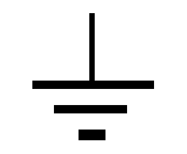 | IEC 417, No. 5017 | Earth (ground) terminal. Primarily used for functional earth terminals which are generally associated with test and measurement circuits. These terminals are not for safety earthing purposes but provide an earth reference point. |
| IEC 417, No. 5019 | Protective conductor terminal. This symbol is specifically reserved for the protective conductor terminal and no other. It is placed at the equipment earthing point and is mandatory for all grounded equipment. | |
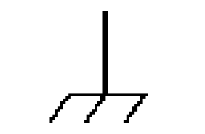 | IEC 417, No. 5020 | Frame or chassis terminal. Used for points other than protective conductor and functional earth terminals where there is a connection to accessible conductive terminals to advise the user of a chassis connection. |
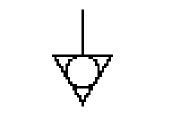 | IEC 417, No. 5021 | Equipotentiality. Used in applications where it is important to indicate to the operator that two or more accessible functional earth terminals or points are equipotential. More for functional rather than for safety purposes. |
| IEC 417, No. 5007 | On (Supply). Note that this symbol is a bar, normally applied in the vertical orientation. It is not the number 1. | |
| IEC 417, No. 5008 | Off (Supply). Note that this symbol is a true circle. It is not the number 0 or the letter O. | |
| IEC 417, No. 5172 | Equipment protected by double insulation or reinforced insulation (equivalent to Class II if IEC 60536). | |
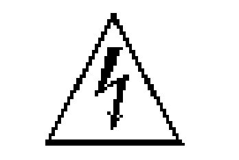 | ISO 3864, No. B.3.6 (Background color - yellow; symbol and outline - black) | Caution, risk of electric shock. Generally used only for voltages in excess of 1000 V. It is permissible to use it to indicate lower voltages if an explanation is provided in the manual. Color requirements do not apply to markings on equipment if the symbol is molded or engraved to a depth or raised height of 0.5 mm, or that the symbol and outline are contrasting in color with the background. |
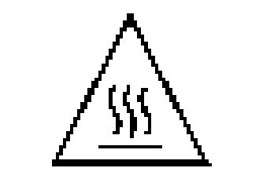 | IEC 417, No. 5041 (Background color - yellow; symbol and outline - black) | Caution, hot surface. Color requirements do not apply to markings on equipment if the symbol is molded or engraved to a depth or raised height of 0.5 mm, or that the symbol and outline are contrasting in color with the background. |
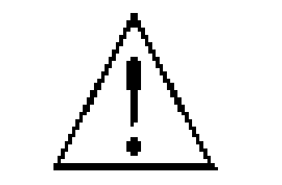 | ISO 3864, No. B.3.1 (Background color - yellow; symbol and outline - black) | Caution (refer to accompanying documents). Used to direct the user to the instruction manual where it is necessary to follow certain specified instructions where safety is involved. Color requirements do not apply to markings on equipment if the symbol is molded or engraved to a depth or raised height of 0.5 mm, or that the symbol and outline are contrasting in color with the background. |
| IEC 417, No. 5268-a | In-position of bistable push control. | |
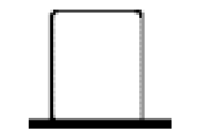 | IEC 417, No. 5269-a | Out-position of bistable push control. |
10.Appendix C – COM
Ethernet Interface Overview
The Ethernet module used is a "Digi Connect ME" module supplied by Digi Connectware, Inc. There are several ways to successfully communicate with the pulse generator over Ethernet. The two most popular methods are raw TCP/IP (such as Labview or programming with VISA libraries) and by mapping a PC COM port using the Digi Connectware's "Realport Drivers".
Whatever method of Ethernet communication is ultimately desired, the utilities supplied by Digi Connectware (included on the CD shipped with the Pulse Generator) will be critical to implementing the communications. Please install the following utilities. Ethernet Communication Notes:
- The Digi Connectware's "Digi Device Discovery" can be used to determine what IP address was assigned by the local DHCP server (if any).
- "Digi Device Discovery" can also be used to open a web interface to the Ethernet module. Simply double-click on the IP address that is displayed in the Digi Device Discovery utility.
- Username: "root"
- Password: "dbps"
- If a mapped COM port is the desired communication method, the Digi Connectware's "Realport Drivers" setup must be used to install the COM port on the PC. The virtual COM port is then local to the computer it was installed on. Please refer to the Digi Connectware documentation supplied on the CD, or call BNC Technical Support.
- The pulse generator's SCPI default baud rate on the Ethernet port is 115200 and should not be changed for communication, whether or not a mapped COM port is used. The virtual COM port on the PC should be set to a baud rate of 115200.
- Echo functionality is not available on the Ethernet port.
11.Appendix D – Ethernet Connectivity
The Ethernet module used in BNC's pulse generators is a "Digi Connect ME" device manufactured by Digi International, Inc. It supports virtually all practical Ethernet communication methods. A set of utilities and documentation by Digi is included on the CD shipped with the pulse generator.
This discussion assumes that the Digi utilities included with your pulse generator and National Instruments VISA (version 3.3 in this procedure, see National Instruments' website) are installed. The procedures discussed have been prepared using Windows XP service pack 2.
Determining IP Address
The Digi module has been reset to factory defaults before it left the manufacturing facility. In this mode, it is ready to be assigned an IP address by the local DHCP server. If a crossover cable is being used, the Ethernet device will assume a default IP address.
The Digi utility "Digi Device Discovery" can be used to determine the IP address that is currently assigned to the Ethernet module. Hit "Start, All Programs, Digi Connect, Digi Device Discovery". When the utility opens, it scans the LAN looking for Digi Ethernet modules. It may take a minute after plugging in or powering the Ethernet module before the LAN negotiates the connection with the Digi module. Hit "Refresh View" in the left column after a minute or so if the utility fails to see the unit when you start it. When the utility sees the Digi device, it will display it in the list (Figure 1).
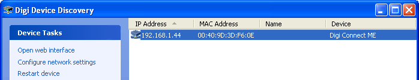
Note the IP address for use later. A static IP address can be set using the "Configure network settings" link in the left hand column. From this point, a web interface can be opened, allowing access to configuration options for the Digi module. Select "Open web interface" under the device tasks on the left hand column of the Digi Device Discovery software. You will be required to enter the following username and password:
- Username: "root"
- Password: "dbps"
The Digi Connect ME Configuration and Management home page will be displayed (Figure 2).
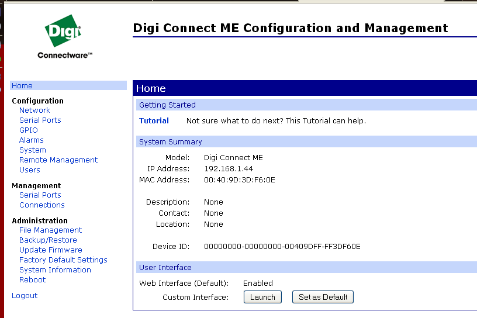
From the home page select "Serial Ports" on the left hand side. The serial port configuration page will be displayed (Figure 3).
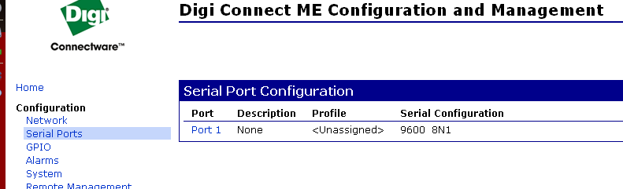
Select Port 1 from the list of ports. Select TCP Sockets from the list of available profiles and click on apply at the bottom of the page. The TCP Sockets profile settings will then be displayed. Be sure that the box next to "Enable Raw TCP access using TCP Port:" is selected and note the port number. By default the port number is 2101. If any settings were changed click on apply at the bottom of the Port Profile Settings section. Next, select the "Basic Serial Settings" section located below the "Port Profile Settings" section. If the product is a 9500+ select 9600 as the baud rate, all other models need to be set to a baud rate of 115200 (Figure 4).
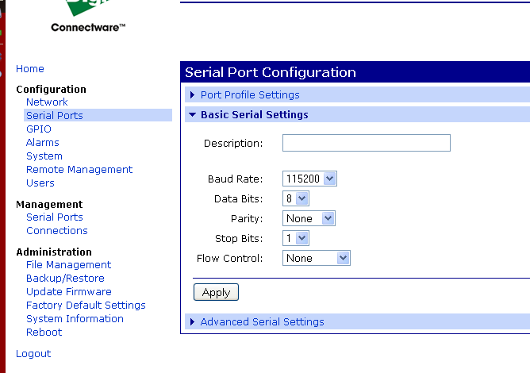
Click on apply after changing the baud rate. Select "Logout" from the bottom of the left hand column. After logging out power cycle the instrument. Use the Digi Device Discovery software to see if the IP address of the unit appears again. Once the unit has been identified the unit is ready for communication.
Testing Ethernet Communication
Ethernet communication to the pulse generator can be tested using a utility that is installed with National Instruments' (current) VISA libraries. After determining the IP address for the unit, "VISA Interactive Control" can be used to send and receive command strings to and from the pulse generator. Hit "Start, All Programs, National Instruments, VISA, VISA Interactive Control" (Figure 5).
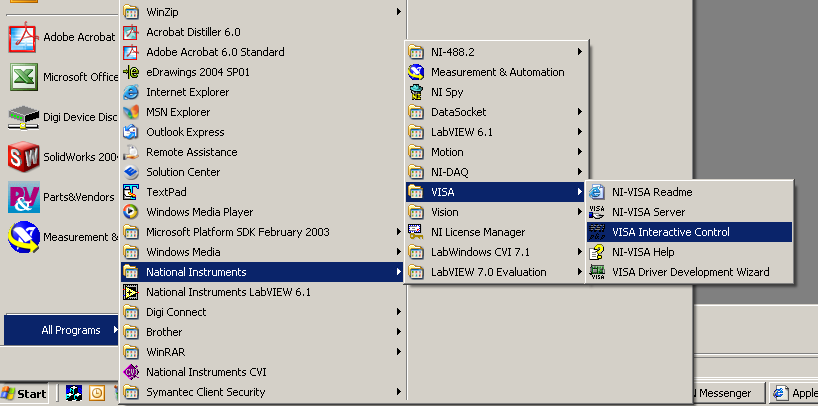
When this utility opens, it displays local resources found. TCPIP resources are typically not shown in this window. However, the resource string can be successfully entered manually in the "Resource to Open" field (Figure 6). The resource string for Digi Connect Ethernet Modules in BNC pulse generators needs to be formatted as follows:
TCPIP0::<IP address>::2101::SOCKET
Or, for example: TCPIP0::192.168.1.44::2101::SOCKET
A session window will open allowing access to communication parameters and read and write buffer access and control (Figure 6). BNC pulse generators support SCPI formatted command strings. For these units, command strings and responses are both terminated with text-style line terminations, a carriage return and linefeed pair. These are ASCII characters number 13 and 10 respectively. They are represented in this utility (and in many other contexts) as "\r\n". In hexadecimal, these are represented as "0x0D" and "0x0A", respectively. When sending command strings to the pulse generator, strings need to be terminated with a carriage return and linefeed pair. Without this line termination, the pulse generator will not execute commands, but continue to wait for more characters until it sees this string termination sequence.
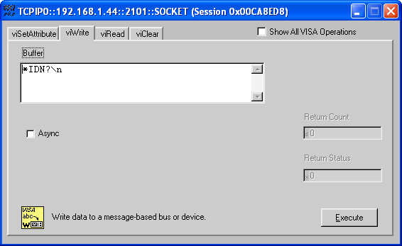
Tab over to the "Write" tab (Figure 7).
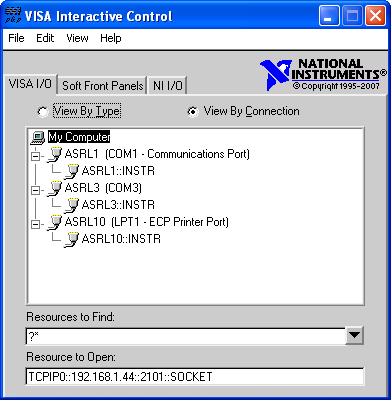
The "Buffer" field can be edited to send any valid command to the pulse generator. Hit "Execute" to send the "*IDN?" command. Now tab over to the "Read" dialog (Figure 8).
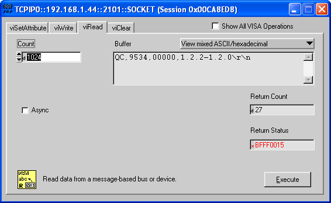
Successive iterations between "Write" and "Read" operations can be accomplished from here. Keep in mind that it is always best to follow each "Write" command immediately with a "Read" command, whether the commands are generated from a utility such as this, or from a more complex coded application. The pulse generator is designed to respond to every command line with either the result of a query (for example, ":pulse1:width?\r\n" could return "0.000100000"), or a simple "ok\r\n" to acknowledge a successful parameter change. If a "Read" command does not follow each "Write" command, the read (output) buffer in the pulse generator can overfill and become corrupt.
Many applications may need a communication mechanism no more sophisticated than what can be achieved with this simple utility. At the very least, this tool can be used to verify that the pulse generator and communication hardware are functioning properly. From here, a specific application in whatever preferred programming language can be built. Although BNC cannot support all programming languages, we do have extensive experience with many languages, and strive to provide whatever assistance we can. Contact QC technical support for the latest information on what assistance may be available for your application.
12.Appendix E – Dual Trigger Input
DT15 Dual Trigger Module
This module option allows the "Gate" input to function as a second trigger input. For consistency, the enabling menu for this option is located under the "Trig" menu structure. Once the dual trigger mode is enabled, both the "Gate" and "Trig" inputs can act as trigger inputs.
Adjustments for the "Gate" functioning as a trigger input are located under the "Gate" menu structure. The voltage threshold level and trigger edge for the "Gate" input can be adjusted from this menu. The "Gate" trigger edge choice is only available when in dual trigger mode.
Once dual trigger functionality is enabled on the unit, each channel can be assigned to either of the trigger inputs. The default trigger source for each channel is the "Trig" input. The trigger source selection is accessed in the secondary channel menus. To access this menu, press the button for the channel of interest twice. Continue to press the Page button until the menu page with "Ch Gate:" and "TrigSrc:" appears. Use the "Next" button to place the cursor on the "TrigSrc" line and use the up/down arrows to change to the desired trigger source.
588 SCPI Dual Trigger Command Summary
| Keyword | Command | Sub-Command | Parameter Range | Notes |
|---|---|---|---|---|
| :PULSe[0] | Command to change the units' global settings, this is the same as using the :SPULse command. | |||
| :PULSe[0] | :TRIGger | Command to change the units' global trigger settings. | ||
| :PULSe[0] | :TRIGger | :MODe | DIS / TRIG / DUAL | Sets the unit to dual trigger mode. |
| :PULSe[1/2/n] | Command to change the units' channel specific settings. | |||
| :PULSe[1/2/n] | :CTRIGger | GATE/TRIG | Sets which input is assigned to the channel trigger. |
IEEE 488.2 Common Commands
| Command | Parameter Range | Notes |
|---|---|---|
| *TTG | Trigger-Trigger Input | Generates a software trigger pulse for the TRIG input only. Operation is the same as receiving an external trigger pulse. |
| *GTG | Trigger-Gate Input | Generates a software trigger pulse for the GATE input only. Operation is the same as receiving an external trigger pulse. |
Changes in Menu Structure Caused by Enabling the Dual Trigger Function
Counter Menu
The counter Menu now shows the option to track the counter counts on the Gate input when functioning as a trigger.
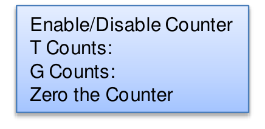
- Enable/Disable Counter
- T Counts:
- G Counts:
- Zero the Counter
Channel Advanced Menu
The Channel Advanced menu now shows that the gate is used in the dual trigger mode and only lets the user select to enable/disable the channel and choose which trigger source to use for that channel.
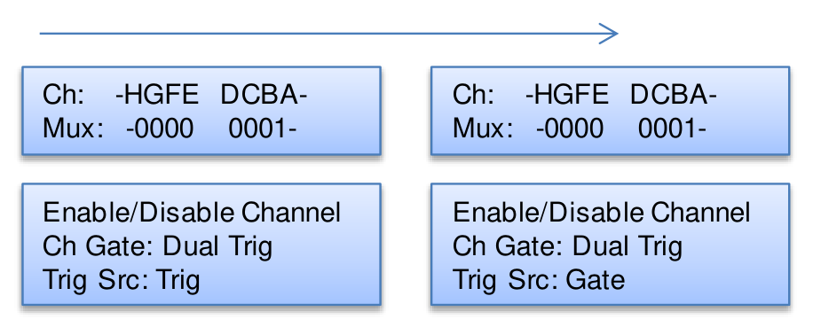
- Ch: -HGFE DCBA-; Mux: -0000 0001-; Enable/Disable Channel; Ch Gate: Dual Trig; Trig Src: Trig.
- Ch: -HGFE DCBA-; Mux: -0000 0001-; Enable/Disable Channel; Ch Gate: Dual Trig; Trig Src: Gate.
(Press the Page button.)
Trigger Menu
The Trigger menu now has a third mode selection, Dual Trigger.
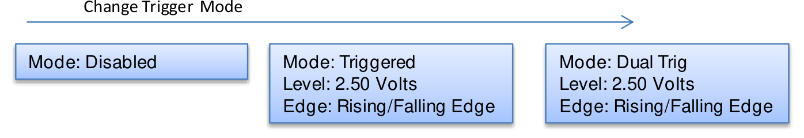
- Mode: Disabled
- Mode: Triggered; Level: 2.50 Volts; Edge: Rising/Falling Edge.
- Mode: Dual Trig; Level: 2.50 Volts; Edge: Rising/Falling Edge.
(Change trigger mode.)
Gate Menu
When the Dual Trigger option is evoked under the Trigger menu the Gate menu changes to allow the user to only change the level and edge parameters.
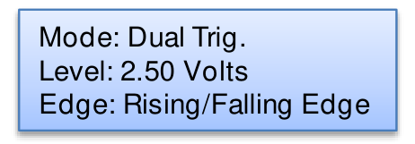
- Mode: Dual Trig.; Level: 2.50 Volts; Edge: Rising/Falling Edge.
13.Appendix F – Impedance Matching Outputs
TZ50 Impedance Matching Output Module
This module option allows a user to have a 50 Ω load on the output while maintaining output amplitude of at least 4 Volts while in the TTL/CMOS mode. All other functionality of the module is the same as the AT20 modules, including output while using the Adjustable Mode Function of the channels.
TTL/Adjustable Outputs
| Mode | Parameter | Specification |
|---|---|---|
| TTL/CMOS Mode | Output Level | 4.0 Volts typical into 50 Ω |
| TTL/CMOS Mode | Rise Time | 3 ns |
| TTL/CMOS Mode | Slew Rate | >0.5 V/ns |
| TTL/CMOS Mode | Jitter – Channel to Channel | <50 ps RMS |
| Adjustable Mode | Output Resolution | 10 mV |
| Adjustable Mode | Current | 200 mA typical, 400 mA max (short pulses) |
| Adjustable Mode | Slew Rate | >0.1 V/ns |
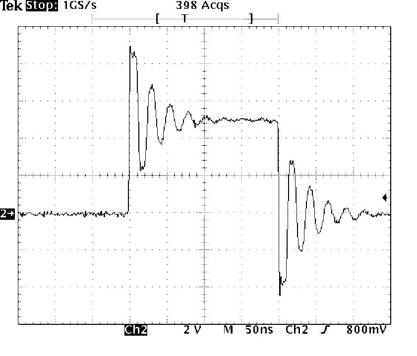
14.Appendix G – Increment Mode
Using the Increment System Mode
The System Increment modes are a pair of special modes, which allow the delay and width of each channel to be incremented at the end of a burst of pulses. Each channel is independent and each may be set with different initial values and different values for the step size for both the delay and the pulse width.
There are two incrementing modes, Burst Increment and Duty Cycle Increment. In the Burst Increment mode, each start command or external trigger produces a burst of pulses. At the end of the burst the appropriate delays and pulse widths are incremented and the instrument is armed for the next start command. In the DC Increment (Duty Cycle) mode the output is started as with the normal duty cycle mode. At the end of each cycle the delays and pulse widths are incremented. This continues for the number of cycles defined by the Cycle parameters. The modes are selected from the system mode menu. The step sizes are specified in the advanced channel menus.
588 SCPI Increment Command Summary
| Keyword | Command | Parameter Range | Notes |
|---|---|---|---|
| :PULSe[0] | :MODe | BINCRement/ DCINCRement/ NORMal/ SINGle/ BURSt/ DCYCle | Sets the T0 mode. Added parameter for Burst Increment and Duty Cycle Increment mode. |
| :PULSe[0] | :CYCLe | 1 - 100 | Sets the number of cycles to generate in Duty Cycle Increment mode. |
| :PULSe[0] | :IRESet | 1 | Resets the width and delay increment parameters on all channels. |
| :PULSe[1/2/n] | :IWIDth | -1.000,000,000,00 to 1.000,000,000,00 | Sets the pulse width in 10 ns increment step sizes. (Note: the commas should be omitted.) |
| :PULSe[1/2/n] | :IDELay | -1.000,000,000,00 to 1.000,000,000,00 | Sets the delay in 10 ns increment step sizes. (Note: the commas should be omitted.) |
Changes in Menu Structure Caused by Enabling the Incrementing Function
System Mode Menu
The System Mode menu now shows two more options, one is Burst Increment and the other is Duty Cycle Increment. The menus below are in addition to the normal menus under the System Mode.
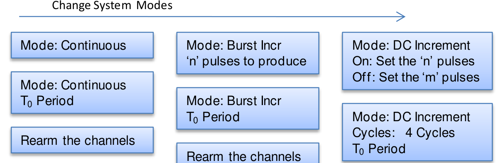
- Mode: Burst Incr; "n" pulses to produce; T0 Period. Rearm the channels.
- Mode: DC Increment; Cycles: 4 Cycles; On: set the "n" pulses; Off: set the "m" pulses; T0 Period. Rearm the channels.
- Mode: Continuous; T0 Period. Rearm the channels.
(Press the Page button to change system modes.)
Channel Advanced Menu
The Channel Advanced menu now has a page where the user can set the Incrementing Width and Delay for each channel.
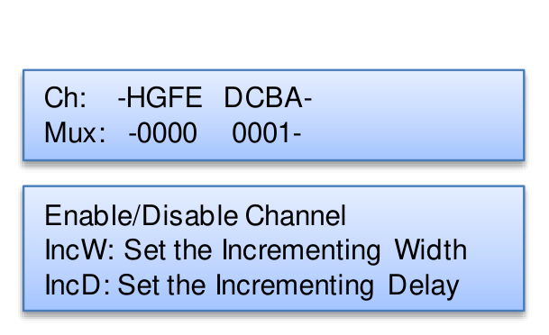
- Ch: -HGFE DCBA-; Mux: -0000 0001-; Enable/Disable Channel; IncW: set the Incrementing Width; IncD: set the Incrementing Delay.
(Press the Page button.)
Using the Duty Cycle Increment Function
- In the System Mode menu: set the mode to DCIncrement mode; set the number of on and off pulses that are desired; press the Page button and set the number of cycles to run; set the T0 period.
- In the Channel menu: set the desired pulse width and delay; set the desired Channel Mode.
- In the Channel Advanced menu: set the desired width increment step size; set the desired delay increment step size.
- Via a serial interface send the :PULSe0:IRESet 1 command to initialize the incrementing mode.
Once the Run/Stop button is pressed the unit will generate one set of pulses, "N" on and "M" off. Pressing the Run/Stop button again will generate a second set of pulses with the width and delay adjusted by the increments set in the Channel Advanced menu. To reset the width and delay increments the :PULSe0:IRESet 1 command must be sent to the unit using HyperTerminal.
Using the Burst Increment Function
- In the System Mode menu: set the mode to BurstIncrement mode; set the desired number of pulses; press the Page button and set the T0 period.
- In the Channel menu: set the desired pulse width and delay; set the desired Channel Mode.
- In the Channel Advanced menu: set the desired width increment step size; set the desired delay increment step size.
- Via a serial interface send the :PULSe0:IRESet 1 command to initialize the incrementing mode.
Once the Run/Stop button is pressed the unit will generate one set of pulses. Pressing the Run/Stop button again will generate a second set of pulses with the width and delay adjusted by the increments set in the Channel Advanced menu. To reset the width and delay increments the :PULSe0:IRESet 1 command must be sent to the unit using HyperTerminal.
15.Appendix H – External Clock
588 External Clock Operation
The 588 pulse generator has a special external clock circuit that allows for external clock synchronization when using clock sources that have very narrow pulse widths and amplitudes.
| Parameter | Minimum | Maximum |
|---|---|---|
| Pulse Width | 100 ps | – |
| Pulse Amplitude | 50 mV | 2.5 Volts Peak |
| Frequency | 10 MHz | 100 MHz |
| Insertion Delay | – | 10 ns |
Using the external clock function:
- Enter the clock source menu by pressing the page button until the clock source page is reached.
- Select the source to External Osc or External PLL.
- Adjust the threshold level appropriate for the amplitude of the external clock source.
- Adjust the rate to match the frequency of the external clock source.
- When the source is set to External Osc a lower case e will appear in the bracketed area of the screen (Figure 10).
- A "?" will appear if the system does not lock onto the external clock source when in External PLL mode. Once the system is locked on the external clock signal the "?" will change to a "p". If the "p" never appears or is sporadic possible problems are: threshold level not adjusted correctly; external clock source not present; external clock has excessive jitter; amplitude of external clock is changing.
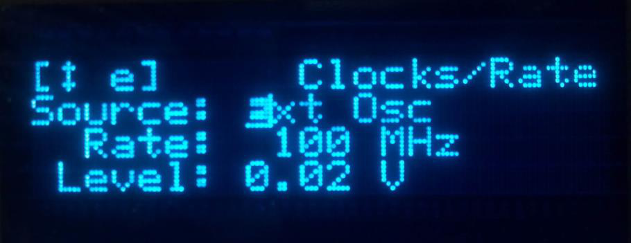
16.Support / Contact
For questions, comments, or warranty service, our technical staff is available to help.
| Contact | Detail |
|---|---|
| Phone | (415) 453-9955 |
| info@berkeleynucleonics.com | |
| Web | www.berkeleynucleonics.com |
| Address | Berkeley Nucleonics Corporation, 2955 Kerner Blvd., San Rafael, CA 94901 |
Model 588 User Manual · Document Version Number: 4.8 · Print Code: 12022090